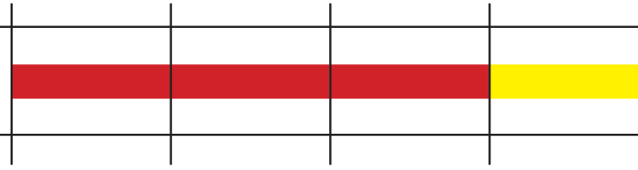
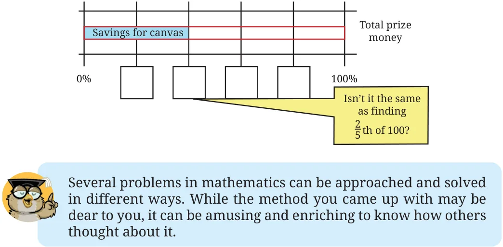
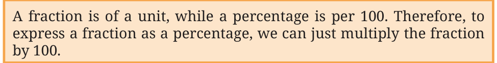

Example 1: Surya wants to use a deep orange colour to capture the sunset. He mixes some red paint and yellow paint to make this colour. The red paint makes up \(\frac{3}{4}\) of this mixture. What percentage of the colour is made with red? \(\frac{3}{4}\) is 3 out of every 4. That is, 6 out of every 8 (equivalent fraction). That is, 30 out of every 40. That is, 75 out of every 100.


Explaining this in a different way: To express \(\frac{3}{4}\) as a percentage, we need to find its equivalent fraction with 100 as the denominator. Two ways of going ahead are shown below.
Method 1 Method \(2 \frac{3}{4} = \frac{3 \times 25}{4 \times 25} \frac{3}{4} = \frac{x}{100}\) . \(= \frac{75}{100} = 75% \frac{3}{4} \times 100 = \frac{x}{100} \times 100\)
\(x = \frac{3}{4} \times 100 = 75\).
So, \(\frac{3}{4}\) can be expressed as 75%. Observe the following bar model diagram showing the equivalence between \(\frac{3}{4}\) and 75%.
\(\frac{1}{4} \frac{2}{4} = 1 \frac{3}{4} \frac{4}{4} = 1\)

\(\frac{25}{100} \frac{50}{100} \frac{75}{100} \frac{100}{100}\)
(25%) (50%) (75%) (100%)
Can you tell what percentage of the colour was made using yellow?
Example 2: Surya won some prize money in a contest. He wants to save \(\frac{2}{5}\) of the money to purchase a new canvas. Express this quantity as a percentage. Try to understand the different methods for solving this problem, as shown below.

Try completing Method 3 by filling the boxes. Method 3
\(\frac{1}{5} \frac{2}{5} \frac{3}{5} \frac{4}{5} \frac{5}{5} = 1\)


Example 3: Given a percentage, can you express it as a fraction? For example, express 24% as a fraction. Since a percentage is a fraction, 24% is the same as \(\frac{24}{100}\) . We can find other equivalent forms of \(\frac{24}{100} = \frac{12}{50} = \frac{6}{25} = \frac{48}{200}\) . In general, we can say that a percentage, z%, can be expressed by any of the fractions that are equivalent to \(\frac{z}{100}\) .